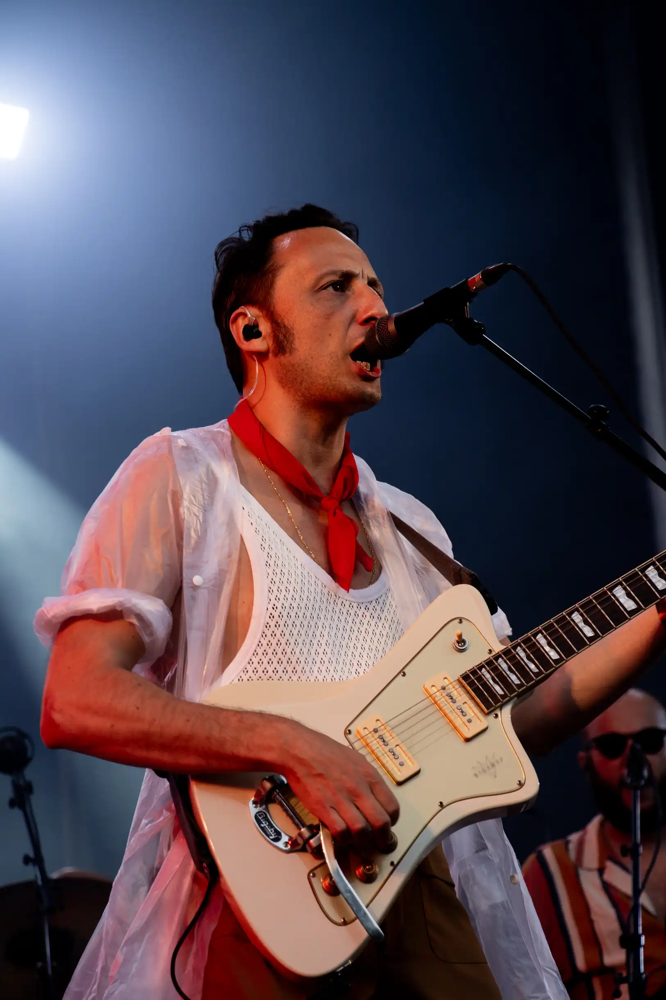
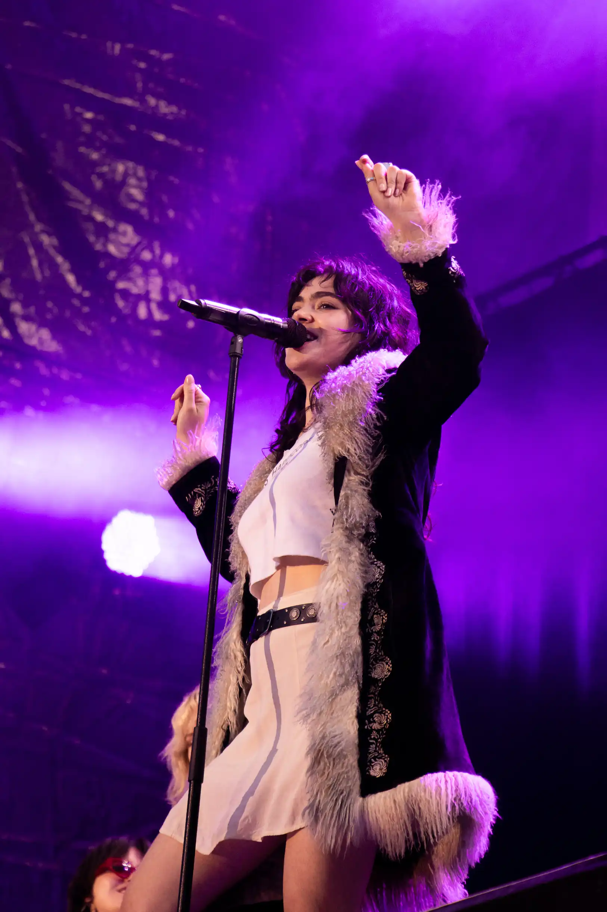
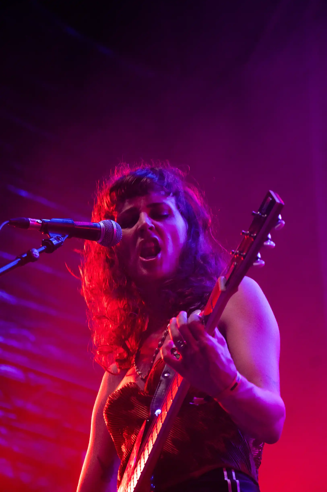
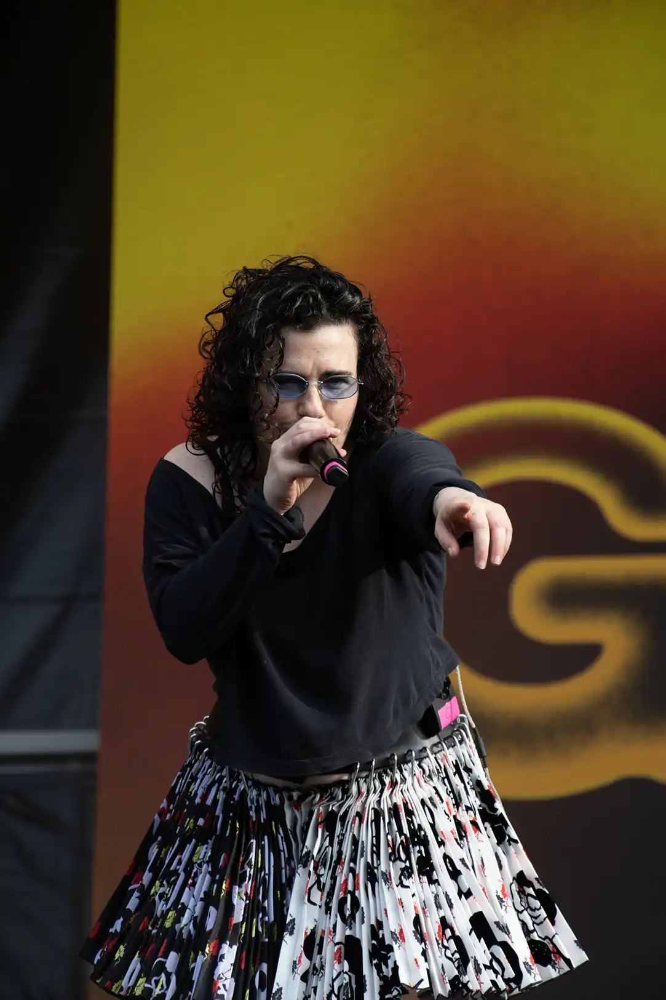

[Bookbinding Workshops]
Kettle stitch binding & japanese binding
AE/ESAD — Matosinhos
june 2025
During my degree, I always tried to be able to develop my own prototypes, especially when it came to editorial design projects. This allowed me to become more independent when it came to the project prototyping process.
Thus, in the context of AEESAD's Cultural Week, I was asked to design and conduct two workshops for the ESAD academic community, focusing on bookbinding techniques applied to the development of editorial project prototypes. The primary objective of this initiative was to share knowledge among students and empower them in the process of designing layouts for projects.
The following videos were produced and provided by AEESAD.
[Photography]
Multimedia team
Jornal Universitário do Porto
june 2023 — june 2024
Produced visual content (editorial photography, event coverage) and graphic materials for the newspaper, as well as its online/offline communication channels. This set of photos are part of the JUP's media coverage of the Primavera Sound festival and were developed alongside the reporter, in order to support the written article.
   [Recruitment campaign poster design]
Multimedia team
Jornal Universitário do Porto
october 2024
Produced visual content (editorial photography, event coverage) and graphic materials for the newspaper, as well as its online/offline communication channels. This poster was the result of a weekend sprint, as a part of the organization of the recruitment campaign for the association. It was developed according to the campaign strategy developed with the Communication department. It seeked to incorporate elements from the history of the newspaper, such as the last print edition.
[Short term course]
Artists' Books. An approach based on materiality
Tutor — Joana Bravo
FBAUP (Porto's University Faculty of Fine Arts)
july 2024
Practical training in the context of the conception, production, and editing of artist’s books, focusing on developing skills across the various stages of the editorial process. The final project of this course was the production of an editorial object within the context of the artist’s book.